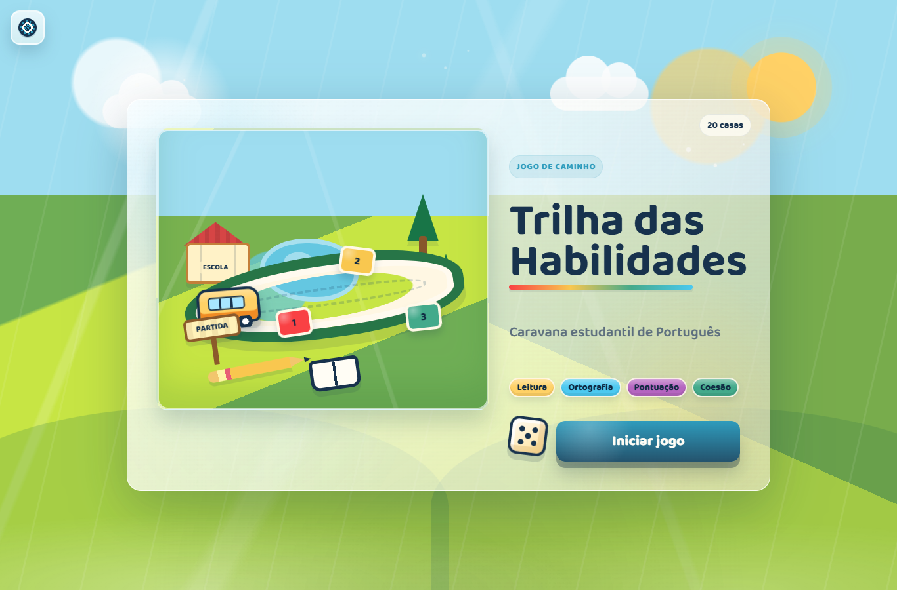
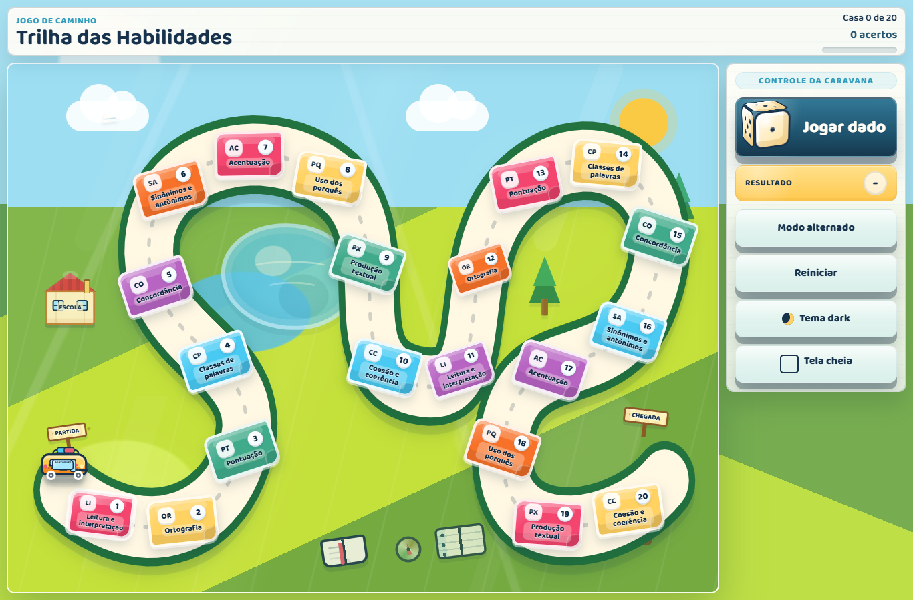
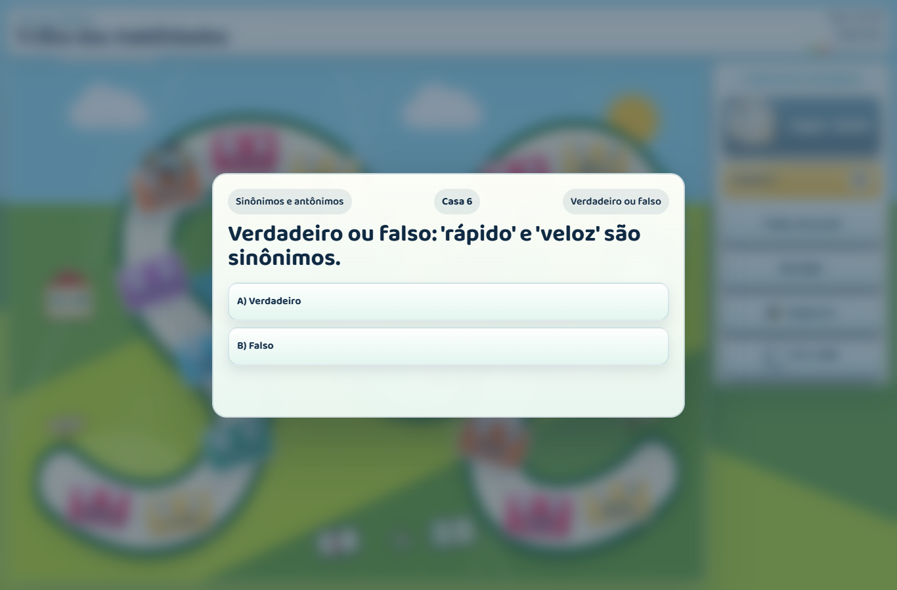
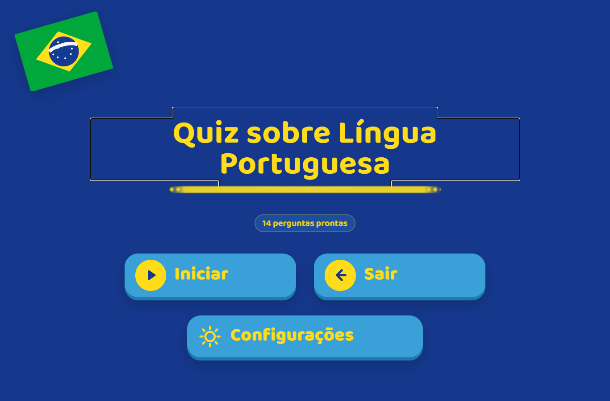
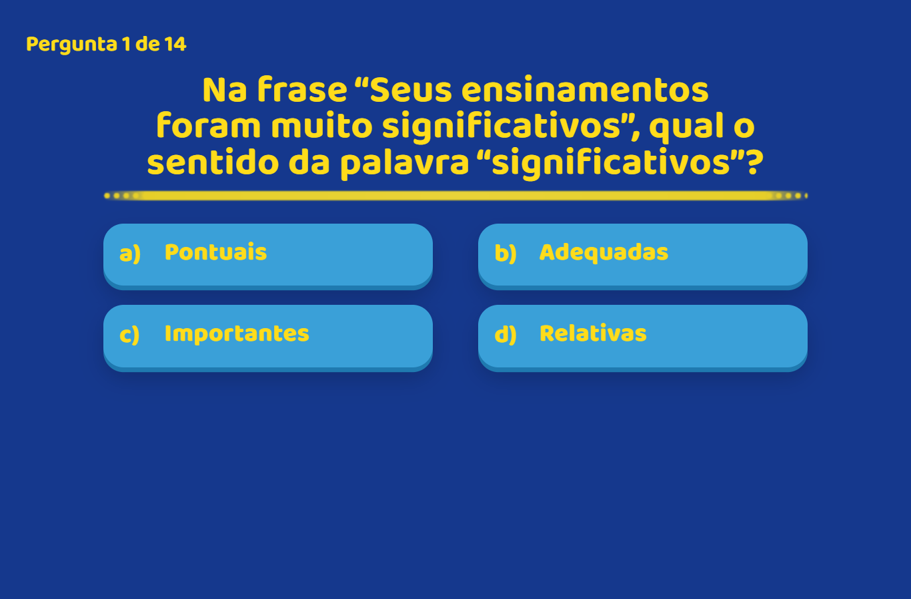
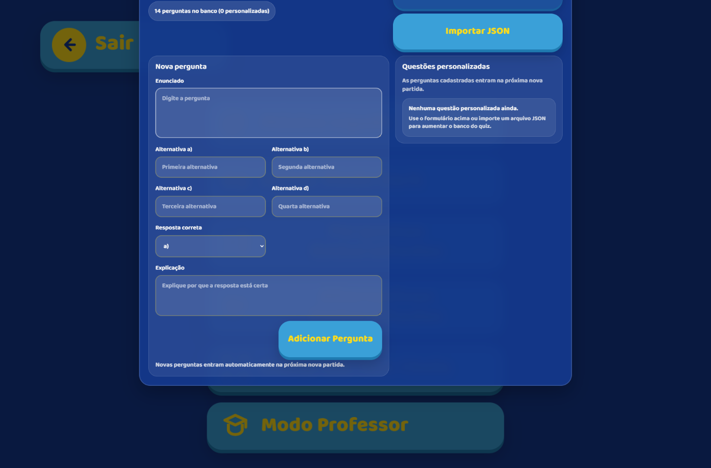
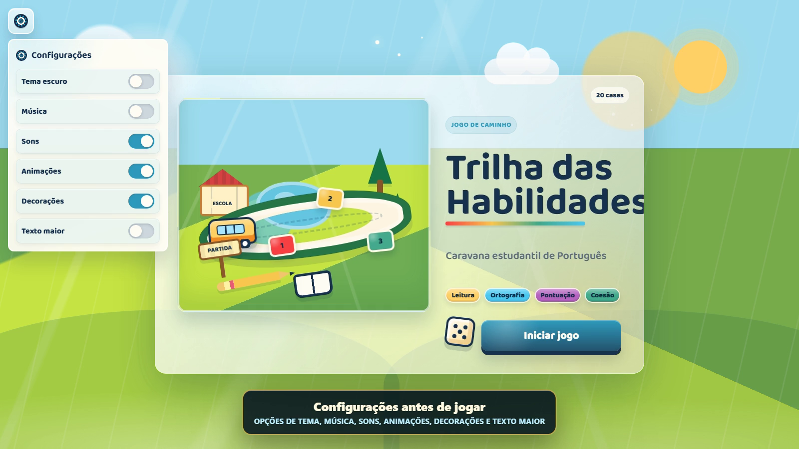

Documentacao total do projeto
Plataforma Lingua Portuguesa
Manual completo de apresentacao, uso, estrutura tecnica, conteudo pedagogico, manutencao, validacao e publicacao dos jogos Quiz Portugues e Trilha das Habilidades.
Sumario
1. Visao Geral
Projetos de Lingua Portuguesa e um conjunto de atividades digitais para revisao de conteudos de Portugues. O repositorio contem dois jogos independentes: uma trilha com tabuleiro, dado e perguntas por habilidade, e um quiz direto de multipla escolha com resultado final e modo professor.
Objetivo educacional
Oferecer revisao interativa para habilidades de leitura, interpretacao, ortografia, pontuacao, classes de palavras, concordancia, sinonimos e antonimos, acentuacao, uso dos porques, producao textual, coesao e coerencia.
Publico de uso
Professores, turmas em sala de aula, laboratorios de informatica e estudantes em revisao individual. O projeto tambem funciona bem em projetor, principalmente no modo tela cheia.
localStorage.
2. Evidencias Visuais
As imagens abaixo foram capturadas diretamente da aplicacao em execucao local, em viewport desktop de 1366 x 900 px.






3. Estrutura de Pastas
| Caminho | Funcao |
|---|---|
Trilha-das-Habilidades/ |
Jogo de tabuleiro com dado, casas, perguntas por habilidade, acessibilidade e tela final. |
Quiz-Portugues/ |
Quiz de multipla escolha com feedback, resultado final, progresso salvo e modo professor. |
docs/ |
Checklist de QA, midias de demonstracao, imagem de preview e esta documentacao. |
tools/ |
Scripts Node.js para validacao automatica, preview local, build estatico e testes. |
.github/workflows/pages.yml |
Workflow de publicacao em GitHub Pages por artifact, com origem em GitHub Actions. |
tests/ |
Smoke tests em Playwright para validar as duas entradas independentes. |
Mapa funcional
4. Como Executar
Execucao simples
- Abra a pasta
Projetos/Plataforma-Lingua-Portuguesa. - Abra
Quiz-Portugues/index.htmlouTrilha-das-Habilidades/index.htmlem um navegador moderno. - Use cada projeto de forma independente, sem tela inicial conjunta.
Execucao por servidor local
Recomendado para testes mais proximos da publicacao:
npm install
npm run serve
Depois acesse http://127.0.0.1:4173/Quiz-Portugues/ ou http://127.0.0.1:4173/Trilha-das-Habilidades/.
Requisitos
- Navegador moderno com suporte a JavaScript, CSS moderno,
localStorage, Web Audio e Fullscreen API. - Node.js apenas para validacao automatica, nao para rodar o projeto.
- Nenhuma instalacao de dependencias e obrigatoria para jogar.
5. Trilha das Habilidades
A Trilha das Habilidades e o modulo mais visual do projeto. O aluno inicia a partida, rola o dado 3D, move a caravana no tabuleiro e responde uma pergunta relacionada a uma habilidade de Lingua Portuguesa.
Fluxo de jogo
- O jogador clica em Iniciar jogo.
- A trilha monta uma sequencia com 2 perguntas de cada habilidade.
- O jogador clica em Jogar dado.
- A caravana se move ate a casa sorteada.
- O modal de pergunta aparece.
- Se acertar, o jogador permanece na casa e ganha ponto.
- Se errar, a caravana volta para a casa anterior.
- Ao completar a trilha, o jogo mostra um resumo por habilidade.
Habilidades trabalhadas
Tipos de pergunta
| Tipo | Codigo | Quantidade no banco |
|---|---|---|
| Multipla escolha | multiple-choice | 19 |
| Verdadeiro ou falso | true-false | 10 |
| Completar lacuna | fill-blank | 12 |
| Associacao | association | 9 |
Controles
| Controle | Funcao |
|---|---|
| Jogar dado | Sorteia um numero de 1 a 6 e move a caravana. |
| Modo alternado | Distribui habilidades pela trilha, alternando temas. |
| Modo por habilidade | Agrupa perguntas da mesma habilidade. |
| Reiniciar | Comeca uma nova partida. |
| Tema dark/claro | Alterna o visual e salva a escolha no navegador. |
| Tela cheia | Melhora o uso com projetor. |
Atalhos
Espaco ou D joga o dado; 1 a 4 escolhem alternativas; R reinicia; T troca tema; F ativa tela cheia; M silencia; Esc fecha paineis e modais.
6. Quiz Portugues
O Quiz Portugues e a versao mais direta da experiencia. Ele apresenta perguntas de multipla escolha, registra respostas, mostra feedback e encerra com pontuacao final e revisao dos erros.
Fluxo de uso
- O aluno clica em Iniciar.
- O quiz monta a sessao com perguntas do banco atual.
- O aluno escolhe uma alternativa.
- O sistema exibe feedback e explicacao.
- Ao final, o aluno ve pontuacao, percentual, mensagem de desempenho e revisao de erros.
Recursos principais
Modo professor
O modo professor permite cadastrar novas perguntas sem editar o codigo. O formulario recebe enunciado, quatro alternativas, alternativa correta e explicacao. O professor tambem pode exportar o banco em JSON e importar em outro navegador.
Formato de pergunta
{
id: "base-1",
prompt: "Texto da pergunta",
options: ["A", "B", "C", "D"],
answer: 0,
explanation: "Explicacao da resposta."
}O campo answer usa indice iniciado em zero: 0 e a primeira alternativa, 1 a segunda, 2 a terceira e 3 a quarta.
7. Conteudo Pedagogico
O projeto possui tres fontes principais de conteudo: perguntas internas do Quiz, banco estruturado da Trilha e material externo em DOCX.
| Fonte | Local | Quantidade | Uso |
|---|---|---|---|
| Quiz Portugues | Quiz-Portugues/script.js |
14 perguntas | Revisao direta com quatro alternativas e explicacao. |
| Trilha das Habilidades | Trilha-das-Habilidades/data.js |
50 perguntas | Banco distribuido em 10 habilidades, com 5 perguntas por habilidade. |
| Questoes para o jogo | Materiais/Questoes para o jogo.docx |
20 questoes | Material de apoio com descritores HLP e respostas. |
Descritores HLP presentes no material DOCX
- HLP016 - Identificar a finalidade de textos de diferentes generos.
- HLP017 - Reconhecer o genero de um texto.
- HLP021 - Localizar informacao explicita.
- HLP032 - Identificar a tese de um texto.
- HLP022 - Inferir o sentido de palavra ou expressao a partir do contexto.
- HLP043 - Reconhecer recursos estilisticos utilizados na construcao de textos.
- HLP024 - Reconhecer efeito de humor ou ironia em um texto.
- HLP038 - Distinguir um fato da opiniao.
- HLP039 - Reconhecer o sentido das relacoes logico-discursivas em um texto.

8. Arquitetura Tecnica
A aplicacao e uma plataforma estatica. Cada jogo possui sua propria pagina, folha de estilos e script. Isso reduz dependencia entre modulos e permite abrir cada jogo separadamente.
Camadas
| Camada | Arquivos | Responsabilidade |
|---|---|---|
| Estrutura | index.html dos modulos |
Define telas, botoes, modais, listas, regioes acessiveis e containers de jogo. |
| Aparencia | style.css |
Controla layout, temas, responsividade, animacoes e estados visuais. |
| Regra de negocio | script.js |
Manipula estado, eventos, pontuacao, fluxo de telas, audio e persistencia. |
| Dados | data.js e constantes JS |
Armazena habilidades, perguntas, posicoes de casas e configuracoes de banco. |
| Validacao | tools/*.js |
Confere sintaxe JS e consistencia do banco da trilha. |
Fluxo tecnico simplificado
APIs do navegador utilizadas
localStoragepara progresso, perguntas personalizadas e preferencias.AudioContextpara musica e efeitos sonoros gerados no navegador.SpeechSynthesisUtterancepara narracao opcional na trilha.Fullscreen APIpara apresentacao em projetor.- Manipulacao direta do DOM com
querySelector, eventos e criacao de elementos.
9. Dados, Persistencia e Formatos
Persistencia local
| Modulo | Chave | Conteudo salvo |
|---|---|---|
| Quiz | quiz-portugues-jogo:state-v2 |
Estado da partida, respostas, perguntas da sessao, configuracoes e perguntas personalizadas. |
| Trilha | trilha-habilidades:theme |
Tema claro ou escuro. |
| Trilha | trilha-habilidades:settings |
Preferencias de som, animacoes, contraste, texto maior, narracao e mudo. |
Banco da Trilha
O arquivo Trilha-das-Habilidades/data.js cria window.TRILHA_DATA, com habilidades, tipos de pergunta, posicoes do tabuleiro, paleta das casas e perguntas.
{
skill: "Pontuacao",
type: "true-false",
difficulty: "facil",
prompt: "Texto da pergunta",
options: ["Verdadeiro", "Falso"],
answer: 0,
explanation: "Explicacao da resposta."
}Regras de consistencia
skillprecisa existir na lista de habilidades.typeprecisa existir emquestionTypes.difficultyaceita formas comofacil,medioedificil, com ou sem acento conforme validacao.answerprecisa ser um indice valido dentro deoptions.- Cada habilidade precisa ter pelo menos o numero definido em
questionsPerSkill.
10. Acessibilidade e Usabilidade
O projeto contem recursos importantes para uso em sala, projetor, teclado e diferentes condicoes visuais.
Teclado
Atalhos para jogar dado, responder, reiniciar, alternar tema, silenciar e fechar modais.
Visual
Tema claro e escuro, alto contraste na trilha, texto maior e layouts responsivos.
Apresentacao
Modo tela cheia e interfaces grandes o suficiente para uso com projetor.
Audio
Musica e efeitos sonoros com opcoes de ativar, desativar ou silenciar.
Narracao
A trilha pode narrar perguntas quando a configuracao de fala esta ativa.
Feedback
Alternativas corretas e erradas recebem indicacao visual e explicacao textual.
11. Testes e Validacao
O projeto possui validacao automatica por Node.js. Nesta geracao da documentacao, o comando abaixo foi executado com sucesso.
npm run check
| Verificacao | Comando interno | Resultado esperado |
|---|---|---|
| Sintaxe da trilha | node --check Trilha-das-Habilidades/script.js | Sem erro de sintaxe. |
| Dados da trilha | node --check Trilha-das-Habilidades/data.js | Sem erro de sintaxe. |
| Sintaxe do quiz | node --check Quiz-Portugues/script.js | Sem erro de sintaxe. |
| Banco da trilha | node tools/validate-trilha-data.js | Habilidades, tipos, respostas e quantidades consistentes. |
Checklist manual recomendado
- Abrir cada jogo em desktop, tablet e celular.
- Testar tema claro, tema escuro e alto contraste.
- Testar fluxo de resposta correta e incorreta.
- Confirmar que o resumo final aparece corretamente.
- Verificar modo professor, exportacao e importacao JSON.
- Testar tela cheia em projetor.
12. Publicacao
O projeto esta preparado para publicacao estatica. Como todos os arquivos sao HTML, CSS, JS e midias, ele pode ser servido por GitHub Pages, Netlify, Vercel ou qualquer hospedagem de arquivos estaticos.
GitHub Pages
O workflow .github/workflows/pages.yml roda em pushes na branch main e tambem por acionamento manual. Ele instala dependencias, executa npm run check, monta dist/ e publica o artifact pelo fluxo oficial do GitHub Pages.
Hospedagem estatica generica
- Publique a raiz do projeto ou o conteudo de
dist/depois denpm run build:static. - Preserve as pastas
Quiz-Portugues,Trilha-das-Habilidadesedocs/media. - Valide os enderecos
/Quiz-Portugues/e/Trilha-das-Habilidades/depois da publicacao. - Não espere uma pagina inicial na raiz; as entradas publicas sao diretas.
Licenca
O arquivo LICENSE indica licenca MIT, com copyright 2026 Allan Sousa.
13. Manutencao
Adicionar perguntas na Trilha
- Abra
Trilha-das-Habilidades/data.js. - Adicione uma pergunta ao array
questions. - Confirme que
skill,type,difficulty,options,answereexplanationestao preenchidos. - Rode
node tools/validate-trilha-data.js. - Rode
npm run checkantes de publicar.
Adicionar perguntas no Quiz pelo codigo
- Abra
Quiz-Portugues/script.js. - Localize a constante
DEFAULT_QUESTIONS. - Inclua um objeto com
id,prompt,options,answereexplanation. - Rode
npm run check.
Adicionar perguntas no Quiz pelo modo professor
Use o botao Modo Professor em configuracoes. Depois de cadastrar as questoes, exporte o JSON para guardar o banco personalizado.
Limpar dados salvos
Como os dados ficam no navegador, para reiniciar completamente os testes e possivel limpar o armazenamento local do site nas ferramentas do navegador ou executar localStorage.clear() no console da pagina.
14. Inventario de Arquivos
| Arquivo | Descricao |
|---|---|
package.json | Metadados do projeto e scripts de validacao, teste, preview e build. |
package-lock.json | Lockfile usado pelo CI e pela publicacao reproduzivel. |
Quiz-Portugues/index.html | Estrutura das telas do quiz. |
Quiz-Portugues/style.css | Visual, temas, responsividade e animacoes do quiz. |
Quiz-Portugues/script.js | Banco inicial, fluxo do quiz, pontuacao, armazenamento, audio e modo professor. |
Quiz-Portugues/patch.js | Arquivo auxiliar preservado do projeto original. |
Quiz-Portugues/README.md | Documentacao resumida do quiz. |
Trilha-das-Habilidades/index.html | Estrutura do tabuleiro, telas, controles e modais. |
Trilha-das-Habilidades/style.css | Visual completo da trilha, responsividade, animacoes e acessibilidade. |
Trilha-das-Habilidades/script.js | Regras do jogo, dado, movimento, perguntas, placar, audio, tema e atalhos. |
Trilha-das-Habilidades/data.js | Habilidades, tipos, casas, cores, posicao inicial e banco de perguntas. |
Trilha-das-Habilidades/README.md | Documentacao resumida da trilha. |
README.md | Visao geral, links publicados, scripts e contrato do repositorio. |
CONTRIBUTING.md | Regras de contribuicao, escopo e verificacao obrigatoria. |
CHANGELOG.md | Historico curado das mudancas perceptiveis. |
docs/README.md | Indice da documentacao do projeto. |
docs/MANUTENCAO.md | Orientacoes para limpeza, build e manutencao do repositorio. |
docs/DOCUMENTACAO_COMPLETA.html | Guia consolidado de uso, estrutura tecnica, QA e publicacao. |
docs/architecture/README.md | Decisao arquitetural da separacao entre os projetos. |
tools/check-project.js | Executa validacoes de sintaxe e integra o contrato do repositorio. |
tools/validate-contract.js | Garante que Quiz e Trilha continuem independentes. |
tools/validate-trilha-data.js | Valida regras internas de TRILHA_DATA. |
tools/serve.js | Servidor local simples para preview das duas entradas. |
tools/build-static.js | Monta a pasta dist/ para publicacao. |
tools/run-e2e.js | Dispara os smoke tests em Playwright com servidor local. |
tests/e2e/smoke.spec.js | Fluxos basicos de Quiz, Trilha e modo professor. |
docs/CHECKLIST-QA.md | Checklist manual para revisao antes de apresentar ou publicar. |
docs/media/trilha-preview.png | Imagem de preview da trilha. |
docs/media/trilha-inicio.png | Captura da tela inicial da trilha para a documentacao. |
docs/media/trilha-tabuleiro.png | Captura do tabuleiro em execucao. |
docs/media/trilha-pergunta.png | Captura do modal de pergunta da trilha. |
docs/media/quiz-inicio.png | Captura da tela inicial do quiz. |
docs/media/quiz-pergunta.png | Captura da tela de pergunta do quiz. |
docs/media/quiz-modo-professor.png | Captura do modo professor do quiz. |
docs/media/trilha-demo.gif | GIF demonstrativo da trilha. |
docs/media/demonstracao-trilha-das-habilidades.mp4 | Video demonstrativo da trilha. |
.github/workflows/ci.yml | Pipeline de qualidade que roda em pushes e pull requests. |
.github/workflows/pages.yml | Automacao de publicacao para GitHub Pages. |
15. Pendencias Recomendadas
Melhorias tecnicas
- Adicionar
favicon.icopara evitar erro 404 no navegador. - Versionar exemplos de JSON exportado pelo modo professor para uso em treinamento.
- Adicionar capturas mobile oficiais em
docs/media/.
Melhorias pedagogicas
- Mapear cada pergunta da trilha para descritores HLP, quando aplicavel.
- Adicionar perguntas de dificuldade dificil ao banco da trilha.
- Criar roteiro de aplicacao para aula de 50 minutos.